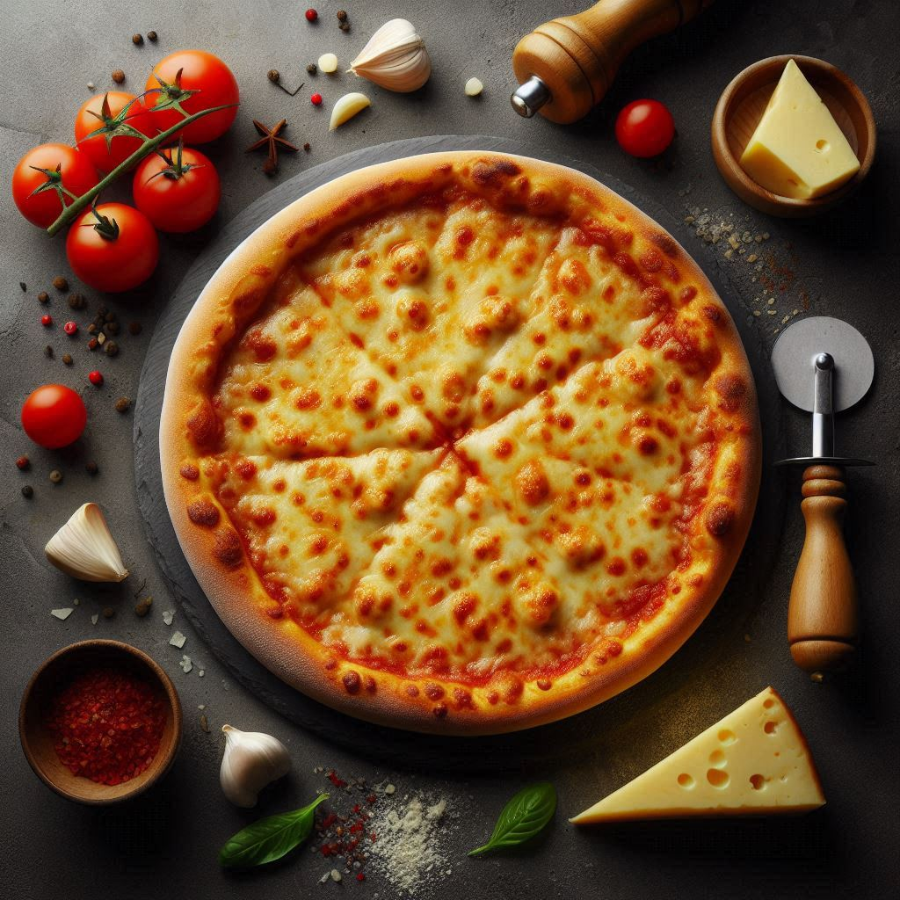

Back To All Recipes
Pizza Recipe

This classic cheese pizza is a masterpiece of simplicity and flavor. A golden-brown crust, crisp on
the outside and soft within, serves as the perfect base. A rich, tangy tomato sauce evenly coats
the crust, offering a vibrant and flavorful foundation. Melted mozzarella cheese, gooey and slightly
caramelized, blankets the pizza in creamy, cheesy perfection. Each bite delivers a delightful
balance of textures, from the tender crust to the luscious cheese. Served fresh from the oven,
this cheese pizza is a timeless dish that celebrates the comfort of familiar ingredients brought
together in a harmonious and satisfying way. 🍕
Ingredients
- Pizza Dough – Fresh or store-bought, as the base.
- Tomato Sauce – Tangy and flavorful.
- Mozzarella Cheese – Shredded or sliced, for the topping.
- Olive Oil – Optional, for brushing the crust
- Dried Oregano – Optional, for added flavor.
Steps to Prepare
- Prepare the Dough: If using store-bought dough, let it come to room temperature.
Roll it out into your desired shape and thickness.
- Preheat the Oven: Set the oven to 475°F (245°C) and allow it to fully heat.
- Spread the Sauce: Evenly spread tomato sauce over the rolled-out dough, leaving a small border for the
crust.
- Add Cheese: Generously top the sauce with shredded mozzarella cheese.
- Optional Flavoring: Sprinkle a pinch of dried oregano or brush olive oil on the crust.
- Bake the Pizza: Place the pizza on a baking sheet or pizza stone and bake for 10-15 minutes, or until
the crust is golden and the cheese is bubbly.
- Serve: Let it cool slightly, slice, and enjoy!
Back To All Recipes